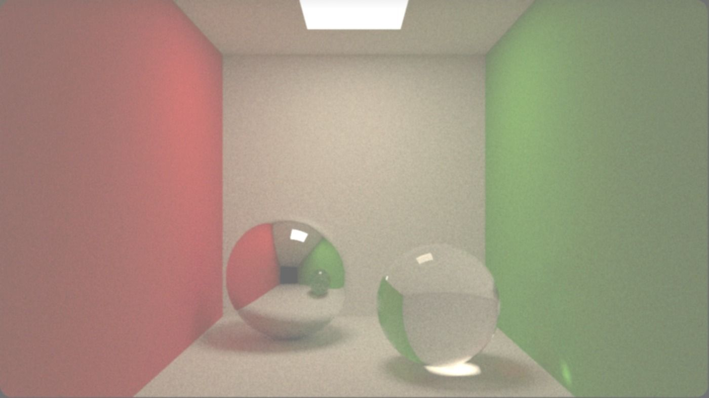

Кабинетите стоят празни по-голямата част от седмицата – в нашия около три четвърти от времето по разписанието му (оценка). Всеки ученик носи графичен процесор в джоба си.
Рояк ги събира в един общ изчислителен ресурс. Нужен е само браузър.
BOINC и Folding@home искат инсталиране и права на администратор – в училище това е невъзможно. Рояк – не.
Телефони и компютри влизат през един защитен адрес. Допуска се само известен код.
Голямата задача се реже на малки части; всяка се дава под наем със срок.
Всяка част смятат две устройства. Контролни части с известен отговор хващат измамниците.
Резултатите се сглобяват: картина, седмично разписание, обучена мрежа.
Измамник? Хванат за 3,4 s, без нито една приета част (тест със симулирани устройства). Ако е успял да вкара резултати, те се смятат наново.
13 стари кабинетни компютъра без WebGPU нарисуваха картина 1920×1080 за около 70 s.
1000 симулирани устройства: около 1000 резултата в секунда, нито едно отпаднало.
Телефон и лаптоп се съгласиха в 30 от 30 отговора на езиков модел (9 – дума по дума).

Плочка по плочкаГотова картина, изчислена от различни устройства.